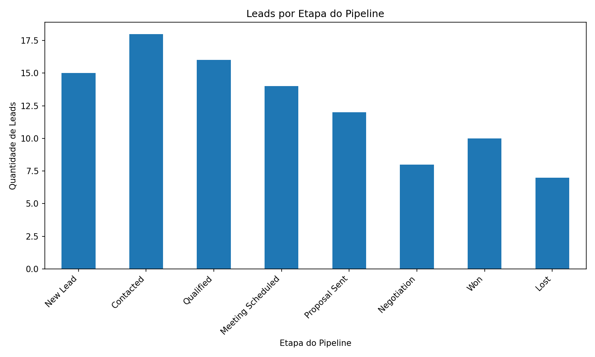
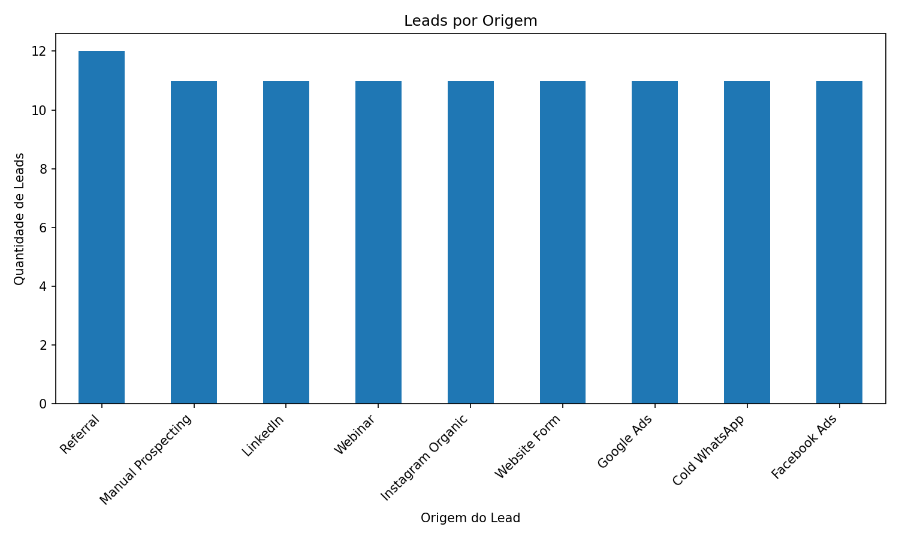
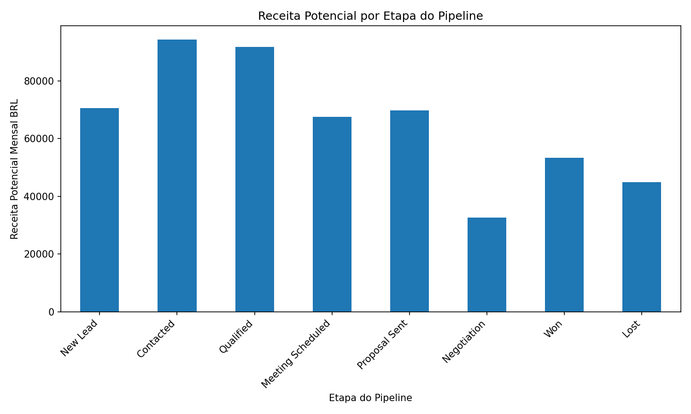
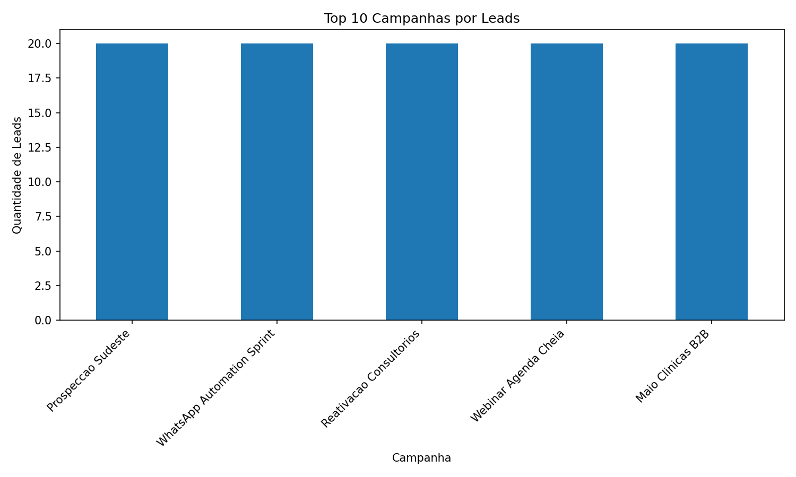
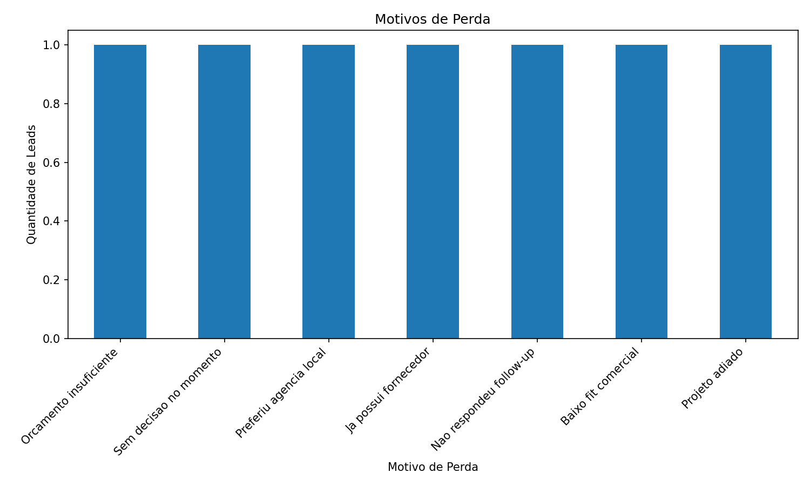

Total de Leads
100
Leads Ganhos
10
Leads Perdidos
7
Leads Abertos ou em Nutricao
83
Taxa de Conversao
10.00%
Receita Mensal Potencial
R$ 524.910,00
Receita Mensal Ganha
R$ 53.330,00
Ticket Medio Estimado
R$ 5.249,10
Lead Score Medio
57.66
Probabilidade Media de Fechamento
40.48%
Graficos do Funil Comercial
Leads por Etapa do Pipeline

Leads por Origem

Receita Potencial por Etapa

Top Campanhas por Leads

Motivos de Perda
